¿Más alcohol,
más muertes
en la vía?
Consumo de alcohol y mortalidad por siniestros viales en 183 países, 2000–2023, con datos de la OMS.
Why¿Por qué?
El problema, la hipótesis y para quién se hizo esta visualización.
0 millones de muertes viales cada año.
Los siniestros de tránsito son una de las principales causas de muerte evitable en el mundo, y la OMS reconoce el alcohol como uno de los factores de riesgo clásicos al volante.
“Si un país bebe más, tendrá más muertes en sus vías.”
Es una intuición muy extendida en campañas y titulares, pero casi nunca se contrasta con datos comparables entre países. Esa es la hipótesis que ponemos a prueba.
Para quién y para qué.
- Quién la usaAnalistas de salud pública y seguridad vial, estudiantes y periodistas de datos. Está pensada para personas no expertas en estadística.
- Qué hace con ellaExplorar, para descubrir patrones y excepciones entre países y regiones; y explicar, para presentar un caso concreto con la ficha de país.
- Qué no puede hacerDemostrar causalidad ni decir nada sobre conductores individuales.
What¿Qué datos?
De dónde salen, qué representa cada fila y qué atributos usamos.
Dos indicadores de la OMS.
- Mortalidad vialTasa estimada de muertes por siniestros de tránsito por cada 100.000 habitantes (indicador RS_198, Global Health Observatory).
- Consumo de alcoholLitros de alcohol puro por persona de 15 años o más: total, registrado, no registrado y turístico. Además, el porcentaje por tipo de bebida y los gramos diarios (sistema GISAH).
Cada fila es un país en un año.
183 países × 24 años = 4.392 observaciones. Es una tabla con dos llaves, país (categórica) y año (ordinal), y valores cuantitativos. El código ISO3 del país une las dos fuentes y las enlaza con las fronteras del mapa.
Atributos derivados y calidad.
- DerivadosPorcentaje de alcohol no registrado, bebida dominante, cuadrante consumo–mortalidad (según las medianas del año) e índice 2000 = 100 por región.
- CalidadAmbas series son estimaciones con intervalo de confianza del 95 %: muchos países no tienen registros completos y la OMS los completa con modelos estadísticos.
How¿Cómo se ve?
Qué marca y qué canal usa cada gráfica, qué muestra y cómo se explora.
Cada punto es un país.
Cómo se leePosición horizontal: litros de alcohol puro por persona. Posición vertical: muertes viales por 100.000 habitantes. Color: cuadrante. Las líneas punteadas son las medianas del año (4,4 L y 13,7).
Qué muestraEn 2019: 28 países con alto consumo y alta mortalidad, 64 con alto consumo y baja mortalidad, 67 con bajo consumo y alta mortalidad, y 24 con bajo consumo y baja mortalidad.
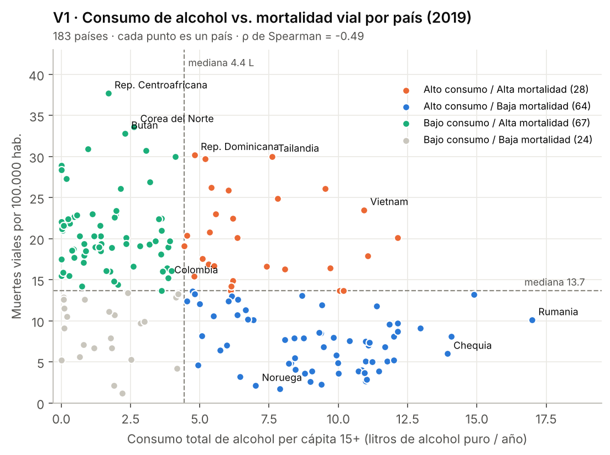
El mismo dato, sobre el territorio.
Cómo se leeMapa coroplético: el color de cada país es su cuadrante, con los mismos colores que la dispersión. Se puede filtrar por año y región.
Qué muestraMuchos países de bajo consumo y alta mortalidad están en África y el Mediterráneo Oriental; Europa aparece con alto consumo y baja mortalidad.
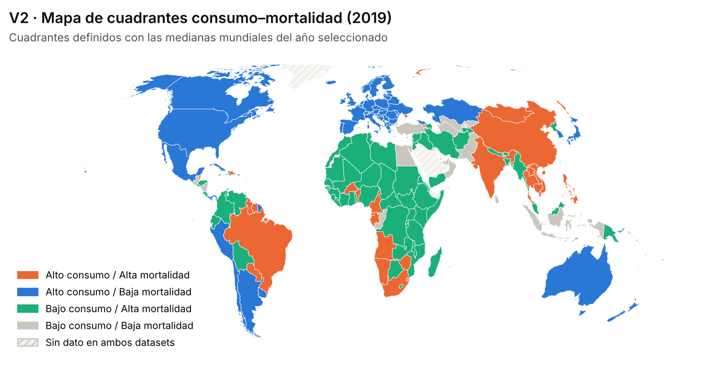
ρ = −0,49
La relación es negativa.
Es el coeficiente de Spearman entre consumo y mortalidad vial en 2019. Se usa Spearman porque compara el orden de los países, no una relación lineal, y no lo distorsionan los valores extremos. Resultado contraintuitivo: los países que más beben tienden a registrar menos muertes viales.
No significa que el alcohol proteja.
Cómo se leePequeños múltiplos: un panel por región de la OMS con dos líneas en índice 2000 = 100, una de consumo y otra de mortalidad.
Qué muestraLa mortalidad baja en casi todas las regiones aunque el consumo se mantenga o suba. Es la falacia ecológica: un promedio nacional no describe a un conductor, y detrás hay ingreso, calidad de las vías y controles.
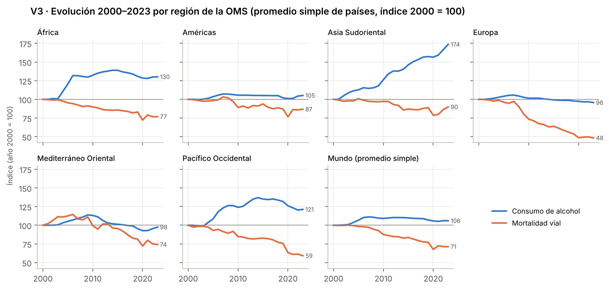
Qué se bebe cambia de un cuadrante a otro.
Cómo se leeBarras apiladas al 100 %: qué parte del alcohol puro es cerveza, vino, destilados u otras bebidas, promediada entre los países de cada cuadrante.
Qué muestraEn los cuadrantes de mortalidad alta pesa más la cerveza y casi no aparece el vino; en los de mortalidad baja el vino tiene más peso.
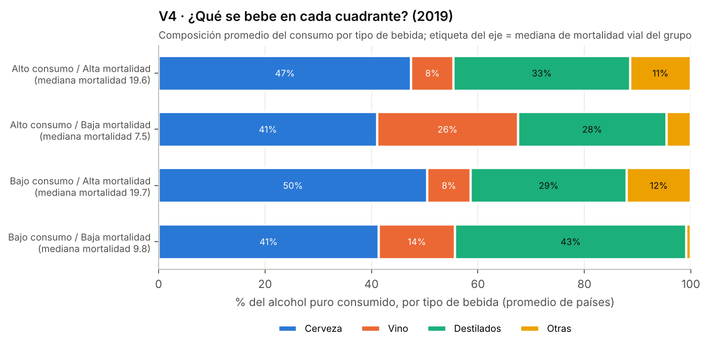
El alcohol que no aparece en las estadísticas.
Cómo se leeDispersión del porcentaje de consumo que queda sin registrar (informal, casero, contrabando) contra la mortalidad, con línea de tendencia de mínimos cuadrados. Se usan los 156 países con consumo mayor o igual a 0,5 L.
Qué muestraAquí la relación sí es positiva (ρ = 0,40): donde más alcohol escapa al registro, hay más muertes viales.
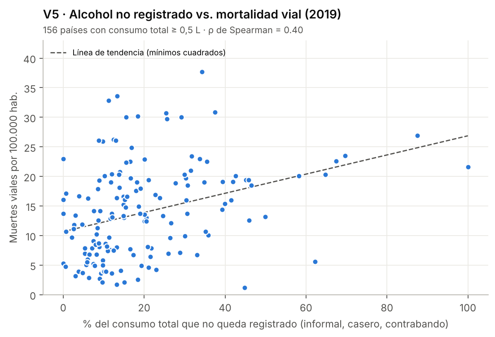
Ficha de país: Colombia, 2019.
Cómo se leeBarras comparativas: el país frente a su región (Américas) y al mundo.
Qué muestraConsumo total de 3,9 litros por persona, frente a 6,0 en las Américas y 5,2 en el mundo.
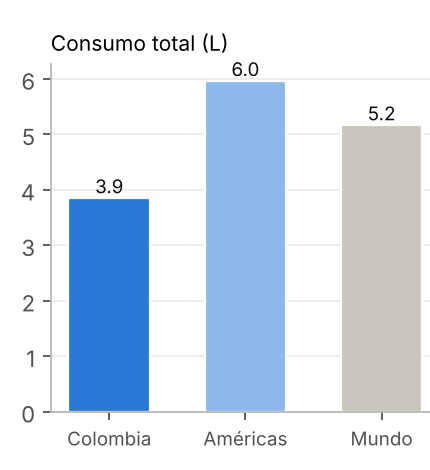
Entre quienes beben, la intensidad es parecida.
Cómo se leeGramos de alcohol puro por día entre las personas que beben.
Qué muestra25,4 g en Colombia, 24,0 en las Américas y 25,8 en el mundo.
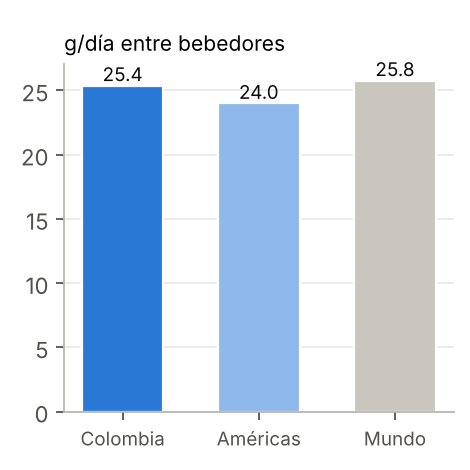
Menos alcohol, más muertes viales.
Cómo se leeMuertes viales por cada 100.000 habitantes.
Qué muestra15,2 en Colombia, 14,1 en las Américas y 14,5 en el mundo: otro ejemplo de que el consumo no explica por sí solo la mortalidad.
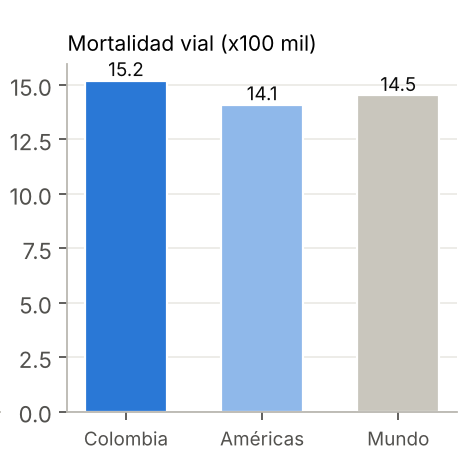
La brecha entre hombres y mujeres.
Cómo se leeLíneas por sexo, 2000–2020, en gramos de alcohol puro por día entre bebedores.
Qué muestraLos hombres beben más del doble que las mujeres (cerca de 30 frente a 11 g en 2020) y ambas series bajan desde 2000.
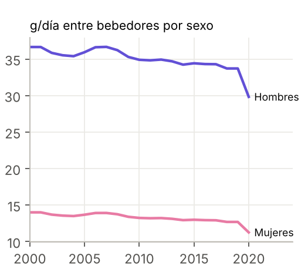
Cómo se explora, en Power BI.
Tres páginas: Panorama (dispersión y mapa), Tendencias (pequeños múltiplos por región) y Ficha de país (bebidas, no registrado y comparación con región y mundo). Los filtros de año, región, país y cuadrante actúan sobre los gráficos de cada página, y al pasar el cursor se ve el valor exacto de cada punto y su incertidumbre.
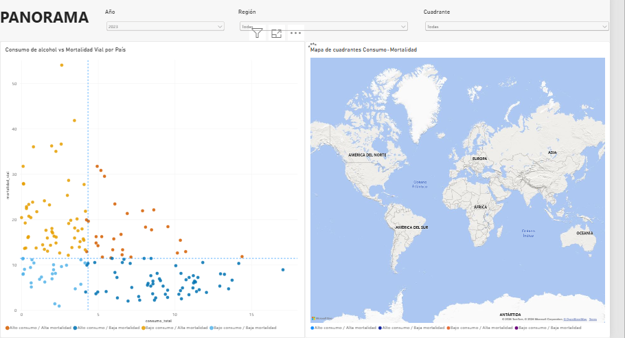
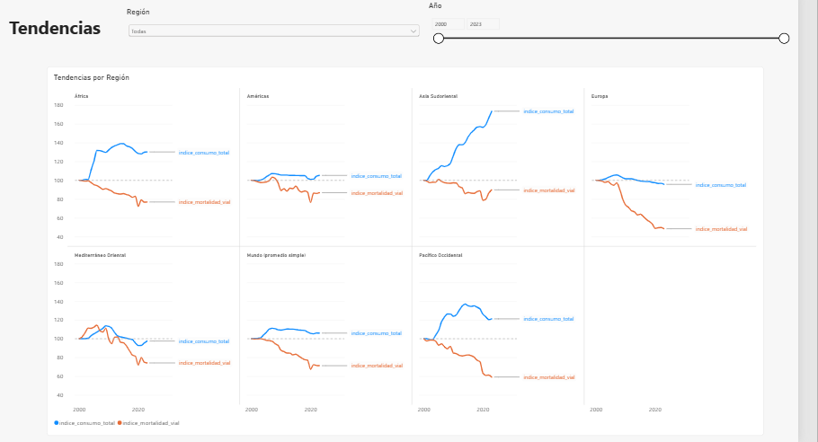
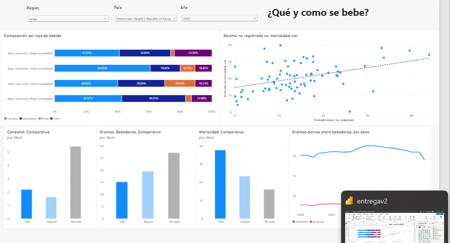
Conclusiones¿Qué aprendimos?
Lo que los datos sí dicen, lo que no pueden decir y qué sigue.
Lo que los datos sí dicen.
- 1Entre países, más consumo de alcohol no va con más muertes viales (ρ = −0,49 en 2019).
- 2La mortalidad baja en casi todas las regiones desde 2000, aunque el consumo no baje.
- 3El alcohol que escapa a los registros sí se asocia con más muertes (ρ = 0,40).
Lo que no pueden decir.
- 1Que el alcohol sea inocuo al volante: son promedios nacionales, no conductores (falacia ecológica).
- 2Qué causa qué: ingreso, calidad de las vías y controles influyen en ambos indicadores.
- 3Cuántas muertes involucran a un conductor ebrio: no hay datos por siniestro.
- 4Cifras exactas: ambas series son estimaciones con intervalo de confianza del 95 %.
Qué sigue.
- 1Incorporar ingreso, calidad de las vías y fiscalización como variables de control.
- 2Trabajar con datos de siniestros individuales, no con promedios nacionales.
Fuente: OMS, Global Health Observatory · RS_198 y GISAH. Estimaciones con IC 95 %. Personajes de The Simpsons: Hit & Run (uso académico). Tipografías: Akbar (J. Bernhardt) y Simpsonfont (Sharkshock, demo).